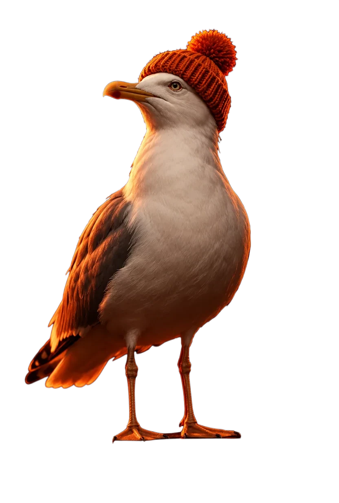

Beide Konzepte übersetzen dieselbe Haltung: ein Hamburger Partner für den Mittelstand, der macht statt zu zählen, persönlich erreichbar ist und Systeme baut, die tragen. Dieser Styleguide beschreibt Farben, Schrift, Formen, Bilder und Bewegung jedes Konzepts und begründet bei jedem Element, warum es zur Marke passt.
Was die Marke ausmacht
Grundlage sind die Aussagen von netzkombyse.de: Hamburg, mehr als 15 Jahre, 18 Marken, über 100 Prozesslösungen, feste Ansprechpartner, Förderpartner für Bundesmittel, „Moin“ zu jeder Uhrzeit. Die Möwe mit Mütze ist das Maskottchen und der Slogan „Machen. Nicht Möwen zählen.“ spielt mit dem norddeutschen Ausdruck für Nichtstun.
Markeneigenschaft
Was sie bedeutet
Visuelle Übersetzung
Hamburg, Hafen, Nordsee
Verwurzelt, nüchtern, mit Wetterfestigkeit
Dunkle Flächen wie Hafen bei Nacht, ein orangefarbenes Leuchtfeuer als einzige Farbe, Möwe als Wächter
Machen statt zählen
Handfest, ergebnisorientiert, ein Augenzwinkern
Große, klare Wörter, wenige Elemente, ruhige Möwe, die sich selten und gezielt bewegt
Mittelstand, inhabergeführt
Direkt, ohne Agentur-Floskeln, auf Augenhöhe
Echte Menschen im Bild, Du-Nähe in der Sprache, keine Stockfotos
Feste Ansprechpartner
Vertrauen durch Gesichter
Henning Groß und das Team als freigestellte Porträts, großformatig, auf der Kante der Seite stehend
Riesenzahlen als Gestaltungselement (15+, 18, 100+, 80 %)
Konzept 15 · Glut
Schwarz, ein glühendes Orange und große, fette Typografie. Das Konzept ist bewusst laut und plakativ: die Marke als Leuchtfeuer im Dunkel.
Warum Glut zur Marke passtDer Hafen bei Nacht ist dunkel, ein Leuchtfeuer ist die einzige Orientierung. Glut übersetzt das: alles bleibt schwarz, nur das Wichtige glüht. Das passt zu einer Agentur, die für Klarheit steht und Entscheidern nicht mit Dekoration die Zeit stiehlt.
Farben
Schwarz #000000Grundfläche. Hafen bei Nacht. Kontrast zu Weiß 21:1
Glut-Orange #FF5A14Aktion, Akzent, Leuchtfeuer. Auf Schwarz 6,7:1
Tiefrot #C21F0BVerlauf und Nebel hinter dem Orange. Weiß darauf 6,0:1
Weiß #FFFFFFHeadlines und Ziffern
Weiß 66 % ≈ #A8A8A8Fließtext, 8,8:1 auf Schwarz
WarumEine einzige Akzentfarbe erzeugt Wiedererkennung: Wer Orange auf Schwarz sieht, denkt an NetzKombyse. Der Verlauf von Orange zu Tiefrot wirkt wie Glut oder Abendlicht über dem Wasser, nicht wie ein Technik-Gradient. Das Rot kommt nie flächig vor, nur als Nebel.
Typografie
Headlines · Bricolage Grotesque 800
Machen. Nicht Möwen zählen.
Text · Sora 300 / 700
Wir verbinden strategische Beratung, komplexe Shop- und Systementwicklung, Markenkommunikation und Performance-Marketing zu einer ganzheitlichen Lösung.
Termin buchen · Referenzen
WarumBricolage Grotesque hat enge, kräftige Formen mit leicht eigenwilligen Details. Sie wirkt wie Hafenbeschriftung: handfest und lesbar, aber nicht anonym. Sora ist breit und geometrisch, ähnlich wie das frühere Montserrat, hat aber mehr Charakter und bleibt auch klein gut lesbar. Zusammen ergeben sie ein „Marke-taugliches“ Paar: Headline mit Haltung, Text mit Ruhe.
Regeln: Headlines Sentence-Case mit Punkt am Ende (Behauptung statt Überschrift), Laufweite −4 bis −5 %, Zeilenhöhe 0,9 bis 1,05. Fließtext mindestens 16 px, 1,6 Zeilenhöhe, maximal 34 Zeichen pro Zeile bei Textblöcken in Spalten. Großbuchstaben nur für Mikro-Labels mit 12 bis 14 % Laufweite.
Karte (Vorderseite) · Karte (Rückseite, nach Antippen)
01
Komplexe Vertriebsprozesse
Wir denken in Architektur statt in Einzeltickets.
Unsere Antwort
Riesenzeile (Hover füllt orange)
[01]Technologie & Shop↗
[02]Kommunikation & Marke↗
WarumDie abgeschrägten Ecken (Knopf, Karte) sind das einzige „Technik“-Zitat: wie ein Stanzteil oder ein Kontaktschild im Hafen. Sie sind eckig, nicht rund, weil die Marke handfest und nicht verspielt ist. Linien, Nummern und Zeilen statt Kartenwände ordnen Inhalte wie ein System, das passt zu „Architektur statt Einzeltickets“. Eine Kartenrückseite in Orange macht den Klick zum Erlebnis: die Antwort auf ein Problem leuchtet.
Bilder
Machen. Nicht Möwen zählen.

Immer freigestellt, nie als Rechteck: Motive stehen direkt auf Schwarz, dahinter ein weiches orangefarbenes Glühen, am Boden ein Lichtreflex.
Motive tragen orangefarbenes Kantenlicht von links oder hinten, Hintergrund bleibt reines Schwarz.
Menschen (Henning, Team): Brustbild oder Halbfigur, leicht gedreht, freundlich, mit Berührung der Unterkante.
Case-Vorschauen zeigen die Welt des Kunden, nicht Screens (siehe Vorschau Tout Terrain).
WarumEin freigestelltes Motiv wirkt wie ein Plakat und braucht keine Fotohintergründe, die schnell nach Stock aussehen. Die Möwe ist das wiedererkennbarste Merkmal: sie macht die Marke freundlich und norddeutsch. Menschen auf der Kante der Seite stehen für „stehen für ihre Arbeit“, das passt zum Versprechen persönlicher Verantwortung.
Bewegung
Ruhig wie ein Sitzvogel: Die Möwe blinzelt, schaut dem Zeiger nach, schaut sich im Leerlauf um, pickt oder schüttelt das Gefieder. Nur der Vogel bewegt sich, Boden und Glühen stehen still.
Headlines bauen sich Zeichen für Zeichen auf, Zeilen füllen sich beim Hover, Karten drehen sich, Zahlen zählen hoch.
Option „Licht“: ein Lichtpunkt folgt der Maus und leuchtet die Stelle aus, der Rest wird dunkel.
Technik: nur transform und opacity. Alles lässt sich mit dem Schalter „Bewegung“ und über prefers-reduced-motion ausschalten.
WarumEine Agentur, die Ruhe und Verlässlichkeit verspricht, darf nicht zappeln. Wenige, gezielte Bewegungen wirken souveräner als Dauerbewegung. Der Lichtpunkt greift das Leuchtfeuer auf und macht Entdecken zur Handlung, ohne Inhalte zu verstecken (er ist abschaltbar).
Do
Orange nur für Aktion und Leuchtfeuer einsetzen
Wenige Wörter, große Schrift, viel Schwarz
Eckige, abgeschrägte Formen
Freigestellte Motive mit Kantenlicht
Don’t
Orange als großflächigen Hintergrund für Fließtext
Runde Pillen-Buttons (gehören zu Pille)
Fotos mit Hintergrund als Rechteck
Dauerhaft bewegte Elemente neben Text
Konzept 14 · Pille
Fette, breite Schrift in Cremeweiß auf Schwarz, runde Pillen, ein orangefarbener Chip, aufklappbare Farbkarten. Das Konzept ist freundlicher, verspielter und zugänglicher als Glut.
Warum Pille zur Marke passtNetzKombyse ist inhabergeführt und nahbar: „Moin“ zu jeder Uhrzeit, feste Ansprechpartner. Pille übersetzt Nähe in Formen: abgerundet, griffig, wie Knöpfe und Buoys im Hafen. Die Farbkarten (Orange, Creme, Anthrazit) erinnern an Seekarten-Tafeln und geben der Seite einen Rhythmus, ohne bunt zu werden.
Farben
Schwarz #000000Grundfläche, Header und Seite sind identisch
Creme #F6EFE3Schrift, Pillen, Karten. Auf Schwarz 18,4:1
Orange #FF6B14Chip, Aktion, Karte. Auf Schwarz 7,4:1
Anthrazit #1B1917Dritte Karte. Creme darauf 15,3:1, Orange 6,2:1
Sonnengelb #FFC93CNur Illustrationen und seltene Highlights
WarumCreme statt reinem Weiß wirkt warm und menschlich, ohne an Kontrast zu verlieren. Drei Kartenfarben in einer Familie (Orange, Creme, Anthrazit) geben Ordnung: erste Disziplin kräftig, zweite hell, dritte ruhig. Gelb bleibt Sonderfarbe, damit die Palette nicht zur Spielzeugfarbe kippt.
Typografie
Headlines · Unbounded 800
Wir bauen Shops
Text · Montserrat 500
Digitaler Vertrieb für Mittelständler: Shopware & Shopify, Marke und Marketing aus einer Hand, mit festen Ansprechpartnern.
WarumUnbounded ist extrabreit und rund: man liest sie aus der Entfernung wie ein Schild am Kai. Sie macht jede Zeile zur Ansage. Montserrat im Text hält die Seite ruhig und gut lesbar. Wörter in Pillen heben das Entscheidende hervor, ohne eine zweite Schrift zu brauchen.
Farbkarten (Kopfzeile: Zahl und Titel, Klick zeigt Details)
01Technologie & Shop
02Kommunikation & Marke
03Marketing & Performance
WarumPillen, Chips und Kapseln sind „greifbar“: sie laden zum Klicken ein, auch auf dem Smartphone. Der orange Chip hinter „Shops“ ist gleichzeitig der Termin-Knopf und macht die Handlung zum Teil der Aussage („Wir bauen Shops, die sich rechnen“ und direkt dahinter der Weg zum Gespräch). Icons ersetzen Textbuttons, weil Kalender, Telefon und Brief international verständlich sind und die Seite aufgeräumt halten. Beim ersten Blick nur Zahl und Titel, Details erst nach Klick: das schützt vor Textwänden.
Bilder
Die Möwe steht groß im Zentrum des Heros, der Körper hinter der Headline, der Kopf davor, so dass das Gesicht nie verdeckt ist.
Henning Groß als freigestellte Halbfigur im Kontaktbereich, bündig auf der Unterkante, mit orangefarbenem Glühen im Rücken.
Case-Vorschau im Bildformat der Datei, Pfeil-Button direkt am Zeiger, damit das Bild beim Hover frei bleibt.
WarumDasselbe Bildmaterial wie bei Glut macht beide Konzepte zu Varianten einer Marke. Die Möwe zwischen den Buchstaben (Kopf vorn, Körper hinten) verbindet Typografie und Bild zu einem Plakat und gibt dem Slogan ein Gesicht.
Bewegung
Wiedererkennbar: Möwe mit Blick, Blinzeln und Gesten (wie Glut), Pfeil-Chip nickt, Scroll-Maus am Heroende zeigt, dass es weitergeht.
Karten klappen mit weicher Einblendung auf, Pillen wachsen beim Einblenden, Bewertungslink füllt sich beim Hover.
Gleiche Regeln: nur transform und opacity, Schalter und prefers-reduced-motion beachten.
Do
Auf den ersten Blick nur Zahl und Titel
Icons mit Beschriftung für Aktionen
Maximal drei Kartenfarben in einer Sektion
Creme für Text, nie reines Weiß
Don’t
Pillen als Auswahl-Elemente für Textinhalte (stattdessen Zeilen mit Fortschrittslinie)
Mehr als eine Pille in einer Zeile mit Fließtext
Abgeschrägte Ecken (gehören zu Glut)
Gelb auf großen Flächen
Gemeinsame Regeln
Thema
Regel
Begründung
Grundfläche
Immer reines Schwarz, Header ohne Linie und ohne Unterschied zur Seite
Ein Schwarz verhindert sichtbare Bildkanten und lässt freigestellte Motive stehen
Akzentfarbe
Ein Orange (#FF5A14 oder #FF6B14), kein zweiter Akzent
Wiedererkennung vor Abwechslung
Möwe
Eine Möwe pro Seite, im Hero, freigestellt, mit Blick
Eine Figur bleibt im Gedächtnis, zwei streiten um Aufmerksamkeit
Menschen
Echte Fotos, freigestellt, Brustbild bis Halbfigur, nahbar und professionell
Das Versprechen heißt „Sie arbeiten direkt mit uns“
Sprache
Du-nah, Sentence-Case, Punkt am Ende der Headline, „Moin“ höchstens einmal pro Seite
Persönlich, ohne zu übertreiben
Cases
Welt des Kunden statt Screens, Klartext (Branche, ein Satz, zwei Chips) bleibt sichtbar
Neugier wecken, aber verständlich bleiben
Fußzeile
Mehrspaltig, Leistungen, Referenzen, Unternehmen, Adresse, Uhr „Moin aus Hamburg“
Der Raum wird genutzt, die Uhr macht die Verwurzelung spürbar